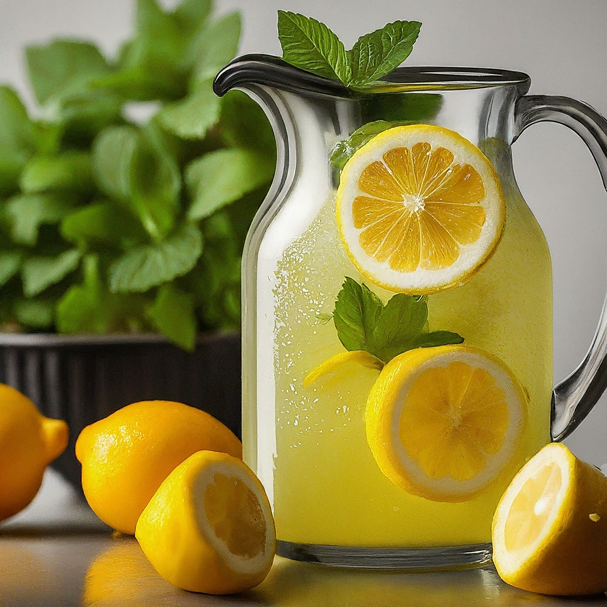

Lemonade
Ingredients:
1 cup granulated sugar
1 cup water (for making simple syrup)
1 cup freshly squeezed lemon juice (from about 4-5 lemons)
4 cups cold water
Ice cubes
Lemon slices (for garnish)
Instructions:
Make Simple Syrup: In a small saucepan, combine the sugar and 1 cup of water. Heat over medium heat, stirring occasionally, until the sugar dissolves completely. Bring to a simmer for a minute, then remove from heat and let cool slightly.
Combine and Dilute: In a large pitcher, combine the cooled simple syrup and freshly squeezed lemon juice. Stir well.
Adjust and Chill: Add the remaining 4 cups of cold water to the pitcher. Taste the lemonade and adjust the sweetness or tartness to your preference by adding more lemon juice or simple syrup. Stir well and refrigerate for at least 30 minutes, or until chilled.
Serve and Enjoy: Fill glasses with ice cubes and pour the chilled lemonade over them. Garnish with lemon slices for a refreshing touch.
Tips:
Fresh Squeezed is Best: For the best flavor, use freshly squeezed lemon juice. You can use a manual citrus squeezer or an electric juicer.
Sweetness Level: The amount of sugar can be adjusted to your taste. Start with a cup and add more if you prefer a sweeter lemonade.
Straining (Optional): If you prefer a smoother texture, you can strain the lemonade after adding the lemon juice to remove any pulp.
Sparkling Twist: Replace some of the cold water with club soda for a fizzy lemonade. Add the club soda just before serving for maximum fizz.
Flavor Variations: For a fun twist, try adding other fruits to your lemonade like strawberries, raspberries, or even muddled mint leaves.
Enjoy your delicious homemade lemonade!